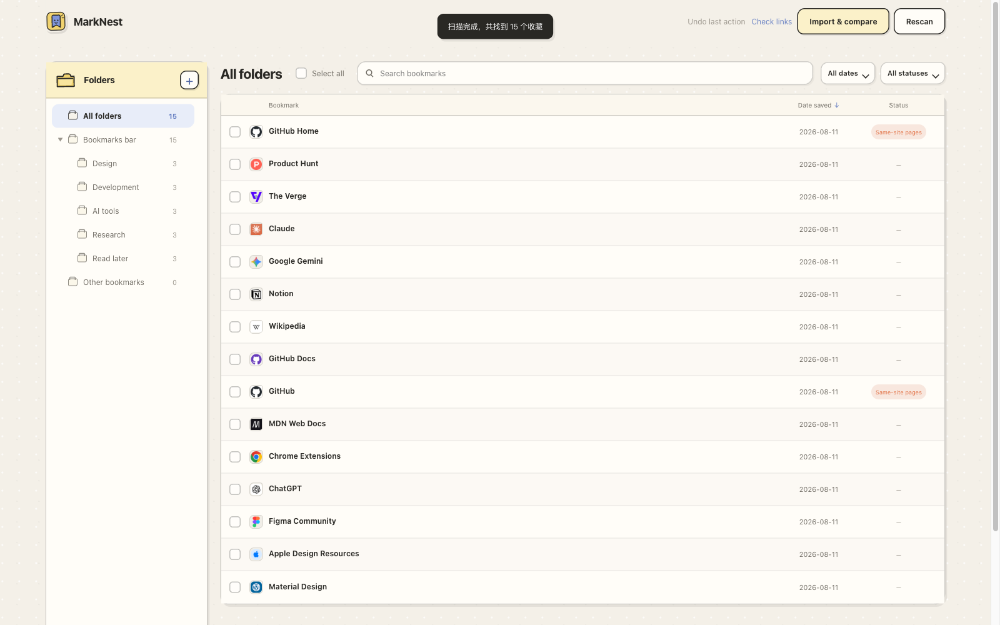
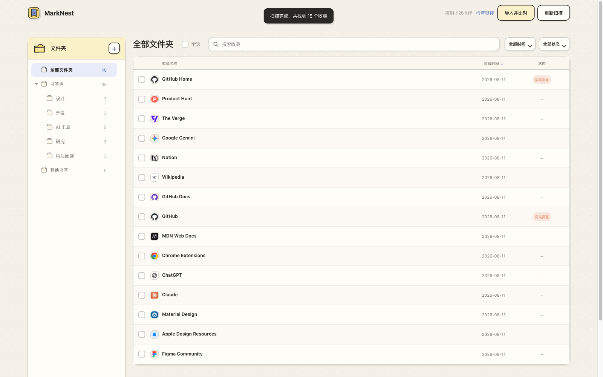

Find what needs attention
先找到需要整理的内容
Search all bookmarks and review duplicate URLs, long-unused items, and broken links.
搜索全部收藏，集中查看重复网址、长期未打开和失效链接。
Find duplicates and old links, reorganize folders, manage bookmarks in batches, and compare an exported bookmark file with Chrome—all on your device.
查找重复与长期未用的收藏，整理文件夹、批量移动和删除，并将其他浏览器导出的书签文件与 Chrome 本地比对。


Search all bookmarks and review duplicate URLs, long-unused items, and broken links.
搜索全部收藏，集中查看重复网址、长期未打开和失效链接。
Select bookmarks in batches or drag folders to change their order and hierarchy.
批量选择收藏进行移动和删除，也可以拖拽文件夹调整顺序与层级。
Compare a standard bookmark HTML file locally and selectively add what Chrome is missing.
在本地比对标准书签 HTML 文件，选择性补充 Chrome 中缺少的内容。
A familiar folder tree on the left and a compact bookmark table on the right.
左侧保留熟悉的文件夹树，右侧紧凑展示收藏内容。